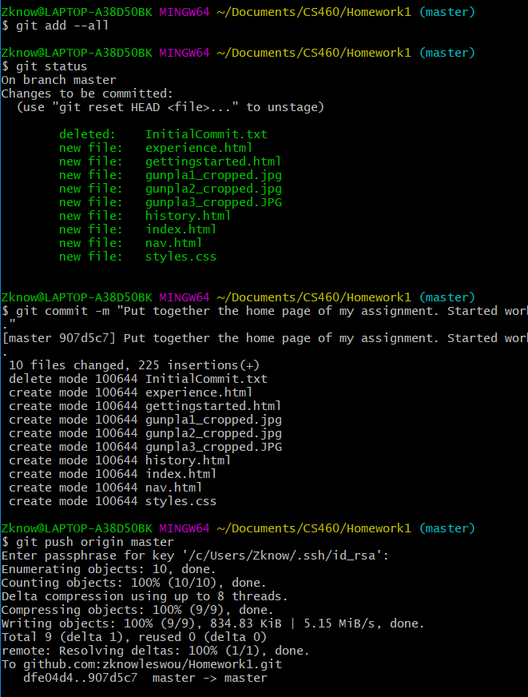

Homework 1
Git takes its toll but the engineer persists
Off to a good start...Oh nevermind

Smooth sailing now
Don't forget to track new files!
The Goals
This assignment we are to become familiar with Git using the command line. In order to get there we are to create a new repo using the command line. After that we will build a static website to demonstrate our ability to use HTML/CSS and bootstrap.
Starting with the repo will allow me to make commits as I put together my static page. I'll have a chance to practice my command line skills. Lets begin.
So We Begin
First up I navigated to my folder where I want each of my homework repos to live. Then I created a folder, initialized my repo and marked the folder so it would be picked up by the initial commit.
$ cd Documents/CS460/
$ mkdir Homework1
$ cd Homework1
$ git init
$ git add .
Once that was done I headed over to GitHub to see what I needed to do to create a repo and set it as my origin. I already knew that I wanted to use SSH authentication so first I used GitHubs SSH key guide to create a local key. Then I added it to my account. I know that i setup my SSH agent incorrectly because each command that goes to GitHub requires me to enter my passphrase. I had enough of a headache just getting this far that I decided to tackle that monster another day.
The First Mistake
$ git commit -m "Initial commit"
$ git remote add origin git@github.com:zknowleswou/Homework1.git
$ git push origin master
$ ERROR!! -> Created an empty text file
Time to set my GitHub repo as the origin. I will be following this GitHub
guide to add my local repo. While following the guide I ran into an issue; git push origin master
resulted in the following: error: src refspec master does not match any. A quick
search revealed that the error was a result of having nothing to commit. Looks like my guide may have
lead me astray. The fix was easy enough. I created an empty text file and added it to my initial
commit. The next push went off without a hitch.
The Repo Is Ready
$ git commit -m "Initial commit"
$ git push origin master
With my repo setup and accepting pushes it was time to become a hacker typer and put together my static site. My slightly esoteric subject is the Japanese hobby called Gunpla.
We're Gonna Need A Montage...
A Few Hours Later...
After navigating back and forth between Gunpla reference material, the bootstrap component guide, image croppers, VS code and git bash I completed my static website. The repo can be found here.
Conclusion
After a final review I reviewed my work a few more times. Yet I know I've missed something. I'm not worried though because I know I will remember it in my sleep the night after the due date. At that point whats done is done so I may as well go back to sleep.
Lastly, for any typos I apologise. I wrote everything in <p> tags in order to save
myself some time. I would promise to write all my copy in Word so that I can spell check it in the
future, however, life does not always give me that sort of time.